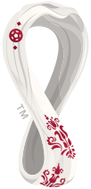
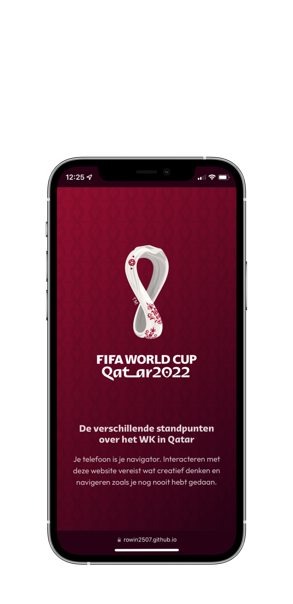
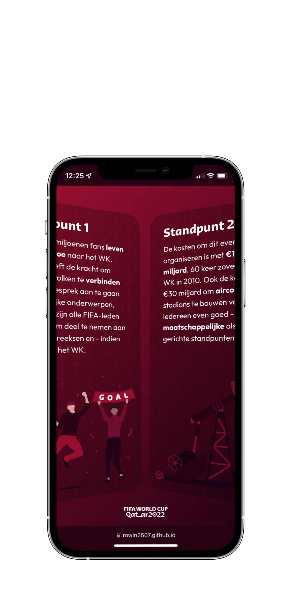
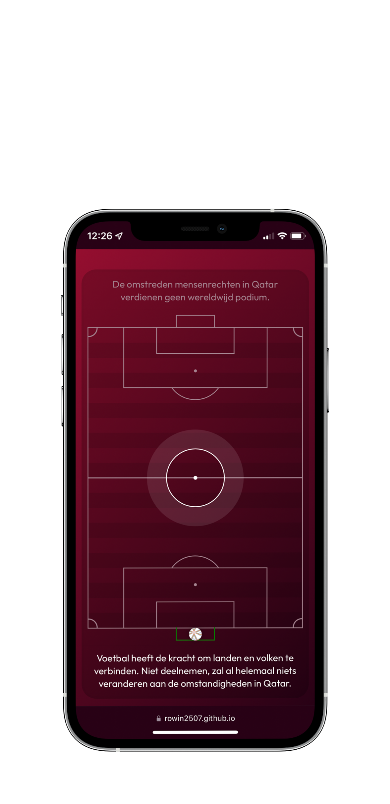

Qatar 2022
Een vernieuwende interface, waar je de bewegingssensoren van je telefoon moet gebruiken om te interacteren.
Dit project is genomineerd voor de Golden Dot Awards 2022 en tevens één van de drie winnaars 🥳.Tijdens de GDA (Golden Dot Awards) wordt het beste studentenwerk in een studiejaar van studenten van Communication and Multimedia Design (CMD) in de schijnwerpers gezet.
Als uitgangspunt van deze opdracht, heb ik voor mijzelf de uitdaging gesteld dat ik eens iets anders wilde doen dan de reguliere interactiemogelijkheden binnen digitale omgevingen. Denk hierbij aan het gebruiken van de muis op je computer en het gebruiken van je vingers op je telefoon en tablet. Ik ben hierdoor uitgekomen om gebruik te maken van de gyroscoop sensoren in je telefoon. Het WK in Qatar van 2022 leende zich hier goed voor, door de vele verschillende meningen over dit evenement.
Mijn uiteindelijke concept is opgedeeld uit 2 globale onderdelen, namelijk het deel waar je je telefoon moet draaien in verschillende hoeken om verschillende standpunten te bekijken over mijn kwestie en door de telefoon te bewegen in een bepaalde hoek om een voetbal te “dribbelen” en hier je eigen keuzes mee te maken a.d.h.v. de eerder getoonde standpunten. Uiteindelijk is er een standpunt overgebleven waar jij het meeste mee hebt en dus heb jij a.d.h.v. deze site ook een mening over dit onderwerp gekregen of ben je het eens met een van de voorbedachte stellingen. Dat was ook mijn prominente doel, namelijk het duidelijk maken dat er verschillende meningen zijn over het wel of niet gaan naar dit evenement, met zowel voor- als tegenargumenten en dus een stukje bewustwording.
Het doel is om écht de gebruiker zelf te laten ondervinden hoe je moet interacteren met de site, zonder dat expliciet te benoemen of toe te lichten. Zowel uitdagend voor de gebruiker, als voor mij de ontwerper.
- 
- 
- 
- 
- 